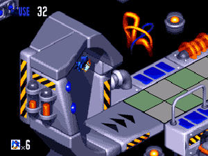
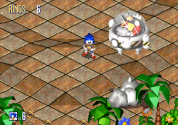

Sonic 3D: Flickies' Island
 De: La Frikipedia, la enciclopedia extremadamente seria.
De: La Frikipedia, la enciclopedia extremadamente seria.
De la serie Videojuegos:
Sonic 3D: Flickies' Island

Carátula de la versión yanki del Sonic 3D: Freaky's Island de Sega Genesis. Nunca hubo versión japonesa para el Genesis porque los japos ya tenían la Sega Saturn
| Desarrollado por:
|
Traveller's Tales
|
| Distribuido por:
|
SEEE-GAAA!
|
| Diseñado por:
|
Sonic Team
|
| Motor
|
Unos poliedros cuadriculeados de gráficos en 3D pre-renderizados
|
| Género(s)
|
Acción/Aventura, Plataformas, correr y saltar, o sea, la misma mierda de siempre pero ahora en 3D!!!
|
| Fecha de lanzamiento:
|
Lo lanzaron cuando la Sega Genesis se estaba volviendo obsoleta y necesitaban un juego que finja ser de 32 BITs para competir contra la flamante Playstation de Sony.
|
| Modos de juego:
|
Correr como pelotudo detrás de unos pájaros de mierda que siempre se quieren escapar de ti.
|
| Requisitos:
|
No tener suficiente dinero para comprar el Playstation y tener que conformarse con seguir comprando cartuchos de Mega Drive
|
| Disponible en:
|
Sega Saturn, PC, y remakes para Playstation 2, Gamecube, Xbox, Wii, y obviamente disponible para emuladores.
|
| Formatos:
|
Originalmete cartuchos, luego vino de bonus track en Virtual Console de los copiones de Nintendo.
|
| Edades:
|
Pueden jugarlo todos, hasta los vejestorios de la 3era edaD
|
| Puntuaciones:
|
Música: 10 Gráficos: 9 Argumento: 5 Jugabilidad: 4
|
Mucha parafernalia pero no te puedes transformar en Super Sonic U_U
Sonic 3D: Flickies' Island (renombrado como Sonic 3D Blast en Sega Saturn aún permanecía en exclusiva para Japón (como siempre) y por eso el último juego de Sonic el erizo para la Sega Genesis tuvo que ser hecho en 3D como para innovar y demostrar que las capacidades de la Sega MegaDrive aún estaban mas allá de las expectativas y le permitían seguir compitiendo aún contra consoladores de 32 BITs como el Playstation pese a que la Mega Drive era de 16 BITs, pero aún así tenía suficiente aguante como para soportar gráficos en 3D.
Historia
Concepto, Creación y Desarrollo
Como dijimos corría el año 1996 y la década del 90 se estaba aproximando a su último lustro, con lo que la tecnología estaba avanzando y novedades como la internet permitían bajar porno a 0,001 Kbps por segundo (todo un logro para la época) y también los videojuegos estaban mejorando su performance, con lo que los 16 BITs del Sega Genesis que la todopoderosa Sega había usado para darle duro por el culo y sin vaselina a la SoreteNES de Nientiendo ya estaban pasando a la historia de los videojuegos para ser prontamente reemplazada por las consolas de la siguiente generación de 32 BITs, cuya publicidad estaba siendo acaparada por la Playstation que Sony había inventado para meterse al mercado de los videojuegos y quedarse con alguna tajada del pastel que hasta entonces solo Nientiendo & Sega se disputaban.
Ante la inminente amenaza de que los gamers dejaran de consumir drogas consolas Sega para pasarse al nuevo mercado del Sony Playstation (cosa que eventualmente así fue), los japoneses de Sega Enterprises Ltd. recurrieron nuevamente a su mesías azul para que les saque las papas calientes del horno, que ya a éstas alturas estaba a 1000ºC, y como los nuevos juegos del Playstation prometían ser en 3D entonces los chicos de Sega sabían que no podían lanzar un nuevo juego de Sonic en 2D por mucho que lo adornaran, porque igual lo cagarían a palos y lo dejarían en ridículo frente a la nueva gama de juegos 3D de 32 BITs, y por eso otro juego de Sonic en 2D hubiera sido un rotundo fracaso (véase Knuckles' Chaotix). Obviamente la solución al problema era que Sonic se despidiera con la frente en alto de su gloriosa consola Sega Megadrive que lo había visto debutar sexualmente en el glorioso mundo pixelado, y donde el erizo había pasado sus años dorados en la romántica era de 16 BITs que lo había visto nacer, crecer, y no digo reproducirse porque sabemos que Sonic es virgen, pero evidentemente también lo hubieramos visto morir si no fuera porque los chicos de Sega se empeñaron en reciclar la franquicia para mantener vivo al erizo, y por eso la única forma de que la mascota con pinchos pudiera competir con las poligonadas tetas de Lara Croft era despidiéndose del Sega Genesis en un último juego de cartuchos pero ahora con gráficos y una jugabilidad en 3D para demostrar que la consola mas vendida de Sega siempre fue la mejor de su tiempo y que estaba a la altura de sobrevivir al fuerte pisotón de 32 BITs de Sony por al menos dos años mas, y todo para que los niñatos fanáticos del erizo azul siguieran lamiendole su espinoso culo en vez de abandonarlo para ir a lamerle las tetas a Lara Croft el culo peludo de Crash Bandicoot.
Así las cosas, el Sonic Team tenía la misión de hacer el juego de despedida de Sonic para Mega Drive en 3D marcando un hito en la Enron, y por eso el juego que hicieron fue una chapucería desconsolante tal como veremos a continuación...
Argumento del juego
Sonic 3D: Flickies' Island (AKA Sonic 3D Blast) aparentaba ser la secuela de badniks en todos sus juegos, y de hecho el Flicky ya había sido el prota de su propio juego cuando Sega lo lanzó para ornitólogo y descubrió una nueva especie de pájaros en una isla remota como si se tratara de Charles Darwin en las Islas Galápagos.
En fin, la cosa va de que los pájaros Freakys son de cuatro tipos diferentes y tienen superpoderes para doblar el espaciotiempo y viajar a otra dimensión atravezando los Anillos Gigantes a modo de Stargate, cosa que en casi todos los juegos de Sonic había de éstos Anillos Gigantes y nunca vimos que en la puta vida salgan pajarracos de ellos, de hecho mas bien eran Sonic y sus amigotes los que se metían ahí para coger a Amy las Chaos Emeralds pero nunca había pajarracos Freakys ahí, así que como vemos los chicos de Traveller's Tales ciertamente se pegaron un viaje con LSD y por eso salieron con el cuento de que de los Anillos salen los pájaros Frikis (ya vemos por qué la empresa se llama "Traveller's Tales" ¬¬). Como sea, resulta que Robotnik se da cuenta de que es gay a los pájaros frikis los puede meter en el culo en sus robots badniks, cosa que tampoco es nuevo y viene haciendo desde que lo conocemos, pero según los lammers de "Cuentos de Viajero" la novedad sería que como los pajeros pájaros viajan através de los portales interdimensionales entonces Robotnik se los quiere meter en el culo en sus badniks para que éstos robots viajen através de los portales interdimensionales y busquen las Esmeraldas Caos para que Robotnik pueda dominar el mundo, cosa que nunca en todo el puto juego vemos que los badniks atraviezan los Anillos Gigantes y de hecho son los badniks mas cutre que se han hecho desde los de Sonic Spinball, pero claro que mas cutre hubiera sido ver un badnik cruzando por el agujero del culo anillo para ir a un Special Stage y correr en un laberinto cuadriculeado tocando los cojones bolas azules hasta dar con una Chaos Emerald, así que por eso los badniks se quedan donde están y lo de buscar esmeraldas se lo dejaron a Sonic.
Un día, por esas casualidades de la vida justo se da que Sonic llega a la Isla de los Flickies junto a sus amigos Tails & Knuckles, que aparentemente se querían ir de vacaciones a Cuba porque es el único país socialista donde hay prostitución, pero al parecer Sonic y compañía sí cruzaron por uno de esos Anillos Gigantes que los llevó a otra dimensión y por eso se equivocaron de isla y en vez de llegar a Cuba cayeron en Flickies' Island, donde en vez de putas lo que encontraron fue un montón de pajarracos encerrados dentro de los robots del Dr. Robotnik, así que Sonic otra vez tiene que hacer la misma mierda que viene haciendo desde que lo conocemos: recorrer la isla y darle ostias a los robots para liberar a los animales hasta encontrar a Robotnik y cagarlo a trompadas para que no se quede con las Esmeraldas Chaos y no pueda destruir el mundo.
Personajes
- clima, sino que te hace correr hacia adelante para avanzar por el plano isométrico 3D de cuadrículas prerrenderizadas, así que como vemos le han cagado las clásicas acciones de ver hacia arriba y hacia abajo, que igualmente no servían para una mierda pero eran una seña característica inventada en la saga del erizo que ahora ya la han eliminado y en su lugar vemos a Sonic corriendo con cierto vaivén hacia los costados que hace parecer que corre porque se ha cagado en los calzones (¡pero si ni calzones tiene!).
- Miles "Tails" Prower: El mejor
amante amigo de Sonic no podía faltar en su juego de despedida del Sega Megadrive, pero lamentablemente en éste juego solo Sonic es el único personaje jugable así que a Tails lo han puesto nomás de adorno. Aquí el zorro de dos culos colas aparece de un color mas amarillo dorado pero no es porque haya conseguido las 7 Chaos Emeralds, de hecho la función de Tails aquí es justamente ayudar a Sonic a conseguir las 7 Chaos Emeralds, y ésto ocurre cuando Sonic le da a Tails por el culo 50 anillos y como recompensa Tails lo lleva a Sonic a un motel Special Stage ubicado en la estratósfera donde el erizo debe correr en una pista llena de pinchos y conseguir el número solicitado de anillos hasta llegar al fin del mundo de la pista y dar con el paradero de Jimmy Hoffa la Esmeralda Chaos que está buscando.

- Ace Ventura. Al igual que a Tails, a Knuckles también lo cagaron que no lo dejaron ser un personaje jugable en éste juego y nomás lo pusieron de adorno como para que no digan que se habían olvidado de él, porque como sabemos Knuckles fue central en Sonic 3 y Sonic & Knuckles porque ambos juegos formaban parte de la misma trama argumental, pero una vez concluída la saga de Angel Island el Guardián regresó a los cielos y a los fans les quedó la incertidumbre de no saber si Knuckles se había consagrado como el nuevo personaje de continuidad en la serie o si sólo había tenido participación en aquella única ocasión para luego desaparecer fugazmente y nunca regresar, así que la inclusión de Knuckles en éste último juego del erizo en 3D era necesaria para confirmar que el equidna sí seguía siendo un personaje de continuidad en la franquicia (por mas que solo le hayan dado unos cameos de mierda y no lo hayan dejado ser personaje seleccionable ¬¬). Aquí Knuckles cumple la misma función que Tails:
rascarse las pelotas todo el día guiar a Sonic hacia unos Special Stages para que el erizo pueda coger a Amy las 7 Esmeraldas Chaos, que en el caso de Knuckles sus Special Stages transcurren en el fondo del ojete de un paisaje volcánico, pero la jugabilidad es la misma y al igual que con Tails, Sonic debe darle 50 anillos a Knuckles para acceder al Special Stage (si no los tienes te jodes, así de simple).
- Dr. Ivo "Eggman" Robotnik: El supervillano de la saga de Sonic no podía faltar en el último juego del erizo para la tan amada Sega Genesis. El Dr. Robotnik no ha cambiado mucho: sigue siendo un científico loco que convierte animales indefensos en robots esclavos para tratar de dominar el mundo, sigue siendo un hijo de puta neo-nazi fanático de Hitler, y sigue usando la misma ropa desde hace cinco años (debería pegarse un baño de vez en cuando :S), solo que ahora que lo vemos en 3D parece mas voluminosamente redondo, y sus mostachones ahora son color negro para hacerlo mas realista y asemejarse a los bigotes de Friedrich Nietzsche (su héroe de la infancia), además de que sus huevos-máticos (me refiero a sus vehículos de guerra) ahora no se rompen todos a los 8 golpes sino que los dos primeros se hacen mierda nomás a los 5 golpes, y los demás sí a los 8 golpes salvo los Bosses finales que son mas jodidos, o sea que la han liado jodidamente con el número de golpes que hay que darle
por el culo a cada jefe según en qué fase aparezca, pero al menos sí hicieron mas realista que el vidrio de la cabina del Egg-O-Matic 2000 se va haciendo mierda a medida que le vas dando ostias (o sea que como siempre le pusieron todo a los gráficos y se cagaron en la jugabilidad ¬¬).
Flicky
Como se había dicho antes, existen 4 tipos de pájaros Flicky en el juego, cosa que estabamos acostumbrados a que en los juegos anteriores Flicky solo era el pajero pájaro azul, pero ahora existen 4 pajeros pájaros frikis de los cuales el azul solo es el que ya conocíamos pero los otros tres son totalmente diferentes, y ahora ya no es mas como en los juegos en 2D que cada que matabas a un Badnik el pajarraco se iba volando, ahora queda revoloteando por ahí y Sonic los tiene que coger (eso suena a zoofilia), y de hecho cada especie de pájaro tiene sus particularidades (y no me refiero solo a su apariencia ni a sus preferencias sexuales):
- Blue Flicky: Los Flickies azules son los ya conocidos pajarracos que salen del agujero del culo de un badnik cada que rompes
las pelotas uno de estos robots, aunque como sabemos en los juegos anteriores el pájaro friki solo era uno de los muchos animalejos que estaban esclavizados dentro de los badniks, pero también antes había otros bicharracos como cerdos, conejos, ratas, pingüinos, tortugas, etc; todos llamados con nombres también del tipo Picky, Pocky, Racky, Pecky, Tocky, etcky, (porque parece que a los japoneses les costaba un carajo aprender los nombres de los animales en inglés así que nomás les mandaron cualquiera y ya); pero sin embargo en éste juego los únicos animales que hay son pájaros porque a los desarrolladores les costaba un huevo hacer a todos los otros animales en 3D así que nomás mandaron al pajaro Freaky y por eso hicieron cuatro tipos de aves Frikis como para que no digan que todos los pajeros frikis son iguales. Los pájaros Frikis azules hacen un esfuerzo consciente para encontrar a Sonic porque son fanáticos suyos desde el inicio de la serie. Si no pueden encontrarlo, vuelan alrededor en un círculo cerrado, lo que le facilita a Sonic su localización, bueno, no a Sonic, sino a tú que eres quien está jugando, pero bueno, se entiende que el Freaky azul es el lameculo de Sonic.
- Pink Flicky: Los Flickies rosa hacen creer que son el pájaro lameculo de sudacas les parecía perfectamente razonable ya que en la América Latina todos creían que Tails era mujer, ya que los imbéciles de los mexicanos que hicieron el doblaje de las series animadas de Sonic traducían "Tails" como "Colitas" que con voz de mujer decía que era la "amiga" o "hermana" de Sonic, así que no sorprendía que el pajarraco de "la zorra de dos colas" sea una pajarita rosa, pero por su parte para los fans del resto del mundo que sí sabían que Tails era hombre al ver su pajaro rosa solo les quedaba pensar que Tails era "rarito". La pajarita rosa es la única hembra del grupo y actúa en gran medida como los pajarracos azules (también quiere ser el lameculo de Sonic), pero los pajaros frikis rosas vuelan en círculos más grandes si no pueden encontrar al erizo (porque las mujeres siempre se hacen las difíciles). En la Volcano Valley Zone los Flickies rosados son reemplazados por otros Freakies color naranja brillante, similar a un Freaky llameante presumiblemente a modo de que éstos pájaros Frikis sean una especie de Fenix, pero en realidad es la misma mierda de pajero friki rosa que cambio de color debido a las limitaciones de la paleta de colores ¬¬.
- Red Flicky: Los Flickies rojos son indudablemente los pájaros protegidos de Knuckles, a los cuales de hecho ya los habíamos visto en Sonic Spinball pese a que el equidna rojo aún no salía en éste juego, pero en quel spin-off de pinball ya estaba éste friki rojo junto al clásico friki azul y a la gallina Cucky que salía también desde Sonic 1 pero que al parecer a los gallinazos no los consideran Flickies y por eso no sale en éste juego. El Freaky rojo es el mas rebelde porque obviamente es comunista (ya dijimos que es el pájaro vinculado a Knuckles) y por eso no deja que nadie lo capture porque como socialista que es ya está harto de ser un perseguido político por los fachos defensores del capitalismo. Los Frikis rojos por ser los mas rebeldes son los mas escurridizos y se mueven constantemente entre dos puntos cercanos, saltando de un punto a otro y no haciendo ningún esfuerzo por encontrar a Sonic (no son unos lameculos como los otros frikis). Su rango de movimiento es pequeño, y les cagaron el vuelo porque no los hicieron volar como a los otros (otra semejanza con Knuckles, que siempre le cagaban el vuelo y no lo dejaban volar libremente como corresponde) pero pueden saltar muy alto y por lo tanto capturarlos puede ser mas difícil que la mierda.
- Green Flicky: Los Flickies verdes iban a ser los pajarracos del único personaje color verde que iban a introducir en la saga del Sega Genesis: Spike The Porcupine, un puercoespín verde que nunca llegó a aparecer en ningún juego y por ende nunca llegó a convertirse en un personaje de la franquicia porque los programadores tenían demasiada hueva, y por eso mismo el pajero friki verde es el que tiene mas hueva y deambula con una terrible paja al punto tal de que divaga al azar sin ningún rumbo aparente y ya ni sabes si tiene interés en la búsqueda de Sonic, o si incluso está tratando de evitarlo, pero no se esmera en hacer movimientos erráticos como el Freaky Rojo ni nada por el estilo, pos no, a los Frikis verdes nomás los ves deambulando con su característico peinado a las trenzas pseudo-rasta que demuestran que son adictos a la marihuana y por eso les da tanta flojera moverse, y como son los pajeros mas vagos no se ejercitan demasiado y por eso tienen sobrepeso. En general el Freaky Verde parece un Kiwi, o un Kiwi (mas bien una mezcla de ambos), aunque bien podría parecerse a un Kakapo de Nueva Zelanda (pero mas porreado y bajo los efectos del THC).
Desarrollo y Sistema de juego
Sonic llendo a buscar a esos pajarracos de mierda... ¬_¬
culo de Robotnik que al tocarlo giraba hasta cambiar a la cara de Sonic, pos no, nada de eso, ahora la cosa va de que Sonic tiene que encontrar a los 5 pájaros Flickies en cada sección de los actos de la zona, ya que como vemos aunque cada Zona sigue dividiendose en Actos ahora la estructura del mapeado de cada acto está dividida en secciones donde no puedes pasar a la siguiente a menos que recojas los 5 pajeros Frikis de cada sexión, lo que se muestra con un tablero debajo en la esquina inferior derecha de la pantalla donde se ven unas caripelas de 5 pajeros frikis con cara de culo porque todavía están encerrados dentro de los badniks, lo que también indica que hay 5 y solo 5 badniks por cada sección (cosa que en los juegos anteriores ni habia secciones y los badniks abundaban a granel porque total no importaba atrapar a éstos pajaros de mierda).The Twilight Zone o algo así). Una vez que los 5 freakies son teletransportados de regreso al
Mobius).
Los escudos elementales de
Sonic 3 & Knuckles fueron cortados y en cambio regresa el escudo azul de los dos primeros juegos, sumado a otros dos iguales: el rojo que es de fuego y el amarillo que te permite hacer un tackle cuando haces un doble salto. Lamentablemente los escudos elementales no volvieron a aparecer en la saga: desde el
Dreamcast en adelante sigue el escudo normal solo que en verde en vez de azul, el eléctrico será tan chafa como aquí es el de fuego y aunque el amarillo no vuelve su habilidad del
Sonic Blast Attack fue usada para darle la habilidad
Homing Attack a Sonic desde la era de 128 BITs. Además Sonic 3D Blast fue el único juego donde los escudos seguían siendo visibles aún mientras tenías las estrellas de invencibilidad (que truchada

).
Para ayudarse en su travesía Sonic cuenta con los ya conocidos monitores de ítems que tienen forma de una Commodore 64, donde tenemos el clásico monitor de 10 Anillos, el zapato de supervelocidad, la cara de culo Sonic que te da por el culo una vida extra, y el Muteki que es el famoso escudo de estrellas que te da invencibilidad por dos segundos (y que ahora lo hicieron de estrellas doradas y plateadas en vez de solo plateadas como era antes), pero desgraciadamente ya no están disponibles los escudos elementales de agua, fuego, y electricidad que había en Sonic 3 y Sonic & Knuckles, y en cambio regresa el escudo de mierda azul ése que había en Sonic 1 & Sonic 2, y el colmo es que para "compensar" sí pusieron otros dos escudos que son idénticos al escudo redondo azul pero de diferente color, siendo uno rojo que nos quieren vender que es de fuego pero solo te protege contra llamaradas y no te permite hacer el ataque flamígero de la Barrera de Fuego de Sonic 3 & Knuckles, y el otro escudo es también similar pero color amarillo, que nos venden como dorado y le da a Sonic la capacidad de hacer el Sonic Blast Attack: un ataque teledirigido para golpear directamente a los badniks con un doble salto, pero te caga que no funciona un carajo cuando no hay badniks cerca y de todos modos eso no le llega ni por asomo al escudo eléctrico que atraía las Rings electromagnéticamente y por eso los escudos de Sonic 3D: Flickies' Island son una reverenda cagada. Además también como novedad están las medallas de Sonic, que son unos emblemas con cara de culo Sonic que si coleccionas 10 obtienes un Continue, que como sabemos cada Continue te otorga 3 vidas nuevas si es que pierdes por Game Over, pero usualmente estas medallas de Sonic están flotando en el aire arriba de los resortes y la mayoría están tan altos que ni con el impulso del resorte llegas y para poder obtenerlos necesitas de los 5 pajeros frikis para que por inercia salten contigo y la larga fila de flickies llegue a hacer contacto con extraterrestres la Medalla Sonic. También otra cagada novedad es que en vez de poner los clásicos pinchos de camas de púas ahora en reemplazo hay unas minas terrestres que explotan si te acercas y disparan proyectiles, pero tranquilo que total no faltan pinchos en el juego y siempre hay bolas de pinchos o púas que salen del suelo según cada nivel, aunque eso obviamente no te ayuda una mierda y es solamente para joderte y ensartarte por el ojete.
El jugador también debe reunir las 7 Esmeraldas del Caos en los Special Stages, que para eso hay que buscar a Tails y Knuckles en las zonas del juego y pagarles 50 dolares anillos para que te lleven a la Etapa Especial. Conseguir las 7 Chaos Emeralds es la única manera de acceder a la última zona del juego: The Final Fight, y solo pasando la Pelea Final puedes ver el final bueno del juego, o de lo contrario el juego termina en Panic Puppet Zone Act 3, y luego aparece una pantalla de "Try Again" muy similar a la que había en el original Sonic 1, con Robotnik jugueteando con las esmeraldas que no conseguiste dando a entender que el hijo de puta se salio con la suya y logrará dominar el mundo y todo por una puta esmeralda de mierda que te faltó conseguir, así que ve a pajearte pasarte todo el juego y completa todos los niveles pero sin olvidar coger a Amy las 7 Chaos Emeralds para que Robotnik no destruya el colorido mundo tridimensional de la Freaky Island.
Niveles, Fases, Zonas, o como mierda se diga
Para aparentar que el juego era de la siguiente generación de 32 BITs a pesar de que era el último de la vieja generación de 16 BITs, los desarrolladores no solo lo hicieron en 3D sino que además agregaron una escena cutre pseudo-opening al inicio del juego para tratar de emular lo que fueron los openings de verdad de los juegos a partir de los 32 BITs, y aunque el Megadrive no aguantaba 32 BITs (por eso el opening chafa de Sonic 3D Blast se ve tan pixelado) igual metieron algunas cutscenes también cutres, principalmente al inicio del juego justo antes del primer nivel, donde vemos unas escenas chafa que mas bien son una especie de fotonovela con algunos gifs animados que nos cuentan el argumento del juego, aquello de que los Flickies son de otra dimension, Robotnik los ha capturado, Sonic tiene que cogerlos y llevarlos a un motel anillo gigante, en fin, toda esa mierda en unas escenas chafa de fotonovela a modo de intro, y luego sí, sin mas preámbulo, los niveles del juego (que vuelven a tener 3 actos como en el Sonic 1 solo que ahora el tercer acto es solamente la lucha directa contra el jefe Robotnik, cosa que no tengas que hartarte con otro tercer acto de buscar pajarracos):
Fases de acción
La "Zona del Huerto Verde" en realidad no tiene ningún huerto y se ve que no plantaron ni una
papa, solo es otro
tributo a Green Hill Zone ¬¬.
- Green Grove Zone: La Zona del Huerto Verde es el primer nivel del Sonic 3D Blast, Sonic 3D: Flickies' Island, o como mierda sea que se llame este puto juego tridimensional de fases cuadriculeadas. Claramente otra vez le han hecho abejorro pero que en vez de volar se arrastra por el suelo (que chafez ¬¬), otros que tienen patas de gusanos color púrpura que ya salían en el Sonic 1, pero ahora están hechos en 3D, tienen el dorso color gris chapa, y en vez de arrastrarse y descuartizarse en pedazos saltan por unos agujeros donde se esconden y deambulan de un agujero a otro (o sea, un circo, y unos aparatos que disparan un Baryshnikov en lo que según dicen son ruinas antiguas pero sospechosamente tienen petroglifos con los rostros de Sonic, Tails y Knuckles (casualidades de la vida).
Imágenes como éstas salían en el website de SEGA en la época en que salió el juego y con eso nos querían vender que por fin estaban los 3 héroes como si se pudiera jugar con los 3 personajes al mismo tiempo gracias al adaptador para 4 Players pero en realidad todo fue una farsa y el juego solo es para un solo jugador U_U
Sonic posando para la foto junto al puente colgante congelado mientras en la esquina inferior derecha de la
afoto podemos ver a Knuckles cagándose de
frío.
no sirven para una mierda fascinan a los geólogos, y por si el maravilloso mundo de murciélago, mariquita (como Sonic). Por lo general la fase es bastante mortífera y abundan las cascadas de lava y los salpicones de lefa brasas calientes emanadas desde los ríos incandescentes, por lo que si no tienes cuidado acabarás inhalando roca fundida antes de que pierdas la virginidad (si, sabemos que todavía no lo hiciste, por eso prefieres seguir jugando éstos juegos), y de hecho encuentras lava por todas partes, incluso hasta dentro de tus calzones las áreas de terreno elevado de roca sólida, donde cuando rompes las bolas piedras cuadradas en busca de la piedra filosofal los ductos subterráneos para coger a tu hermana el Escudo Rojo, suele que solo uno de cada 10 bloques de granito está tapando un ducto y en realidad bajo los otros bloques hay grietas donde también hay lava en ebullición cosa de que caigas sobre ella y Sonic se queme y chille como marica perdiendo todas las Rings y los pajeros frikis pájaros flickies que había cogido sin condón hasta el momento. En el Acto 3 de ésta Zona el Dr. Robotnik desciende con su Egg-O-Matic 2000 y queda empotrado en el centro de una máquina conectada a tubulaciones que succionan mi pene gases calientes del interior del manto de lava turbulenta que cubre la zona, aprovechando esa energía geotérmica para disparar un lanzallamas cuyas flamas siguen a Sonic como si se tratase de un misil rastreador Hellfire (no por nada se llaman HellFire ¬¬), y Sonic debe corretear para huir pero solo puede pararse en las cuatro esquinas de la plataforma porque el resto del piso está hecho de lava (de hecho a eso jugaban hotel en Miami), y por eso éste Boss es uno de los jefes mas difíciles del juego y a los niños les ha costado un huevo y la mitad del otro el poder pasarlo (¿o por que creías que el niño loco alemán reaccionó así?). Gene
Simmons Gadget tiene los únicos loopings que no son redondos, cosa única nunca antes vista en ningún otro nivel en toda la historia de la franquicia (PD: A nadie le importa! ¬¬)
Gene Gadget Zone: La Zona del Aparato de Genes es el sexto nivel del juego, que al parecer es el laboratorio de investigación genética del Dr. Robotnik, cosa que no sabíamos que Robotnik tenía un doctorado en ingeniería genética en la pesadilla de cualquier Auschwitz). Así las cosas, Sonic el erizo debe salvar a sus hermanos animales (cosa que se la ha pasado haciendo todo éste tiempo ¬¬) y para cumplir su misión debe atravezar éste laboratorio de alta B't X de Masami Kurumada (sé ve que los chicos de Traveller's Tales eran fans del matraces que contienen fluídos corporales (lavado de cerebro de la imperialista de las empresas privadas del capitalismo, de las cuales Robotnik quiere hacerse con el control para poder dominar el mundo. En el segundo acto hay algunas áreas empinadas con pendientes y Sonic debe avanzar por unos peldaños de los cuales algunos son móviles y si Sonic no le atina con el pie se termina cayendo al vacío, y aunque no muere resulta en un verdadero fastidio tener que caer por el agujero y darse toda la vuelta una y otra vez cientoochentamil veces hasta que puedes embocarla y pasar a la siguiente área de la fase (si ésto te pasa muy seguido es porque eres una verga jugando a éste juego), pero de todas formas ésto no te mata, a diferencia de las cámaras de seguridad que desde el primer acto venimos viendo que en realidad son armas y cumplen la misma función tanto de vigilarte como de dispararte metralla en todas direcciones al mismo tiempo. Finalmente Sonic llega al Acto 3 de ésta tortuosa fase donde debe pelear contra el Dr. Robotnik, quien ahora ataca a Sonic en una cinta transportadora tamaño industrial que arrastra al erizo hacia una cama de clavos, y nuestro héroe debe correr en sentido contrario para salvarse el culo y al mismo tiempo evadir los bloques con pinchos que vienen en la cinta transportadora al mismo tiempo que Robotnik hace descensos periódicos con su Egg-O-Matic 2000 para dispararle misiles HellFire a Sonic (se ve que en ésta a Robotnik se le fue la mano con tanto sadomaso). Sonic con los 4
pajeros frikis pájaros flickies que rescató, y a punto de salvar al último pájaro flicky que queda en todo el juego (y como siempre repiten al mismo
pájaro en vez de haber creado a un quinto pájaro para no tener que copypastear a ningún pajarraco repetido ¬¬).
cometer Seppuku meterse por el agujero del culo de un ducto metálico que sale de lo que parece ser una gran nariz con unos grandes mostachos de una gran cara de culo Robotnik, que como vemos parece que el "Títere del Pánico" era un enorme y descomunal robot hecho a imagen y semejanza del Dr. Robotnik!!!... Al meterse por la nariz del Títere del Panico, Sonic ingresa al Acto 3 de Panic Puppet Zone donde tiene como Plexiglás pero hecho a prueba de todo aparentemente compuesto por un polímero de Nomex y Kevlar, casi tan dúctil como el Vinalón. Debido a semejante coraza los golpes de Sonic no dañan el vehículo de guerra de Robotnik y por eso muchos noobs no han podido pasar éste Boss, pero el secreto está en que hay que dejar que los brazos mecánicos del Boss se posen sobre la cabeza de Sonic y cuando intenten aplastarlo el erizo debe moverse rápido para golpear el LED del hombro del brazo mecánico que trató de matarlo, teniendo un total de 4 golpes por brazo completando los 8 hits necesarios para acabar en tu cara al jefe, pero Robotnik escapa al piso inferior y Sonic debe tirarse a tu hermana por el agujero del culo de la escotilla del suelo que por esas casualidades de la vida solo se abre si le das los 8 golpes al Jefe, y cuando te tiras caes al piso de abajo donde te topas con que Robotnik sigue vivito y culeando coleando y la historia se repite en un Jefe de modus operandi similar pero ahora los dos brazos mecánicos de la máquina no tratan de aplastarte ya que son lanzallamas y se alternan disparando uno a la vez por turno por lo que Sonic debe correr para evitar que le quemen las pelotas al mismo tiempo que debe golpear el LED del lanzallamas correspondiente. Tras darle otros 8 golpes a Robotnik ésta vez en sus genitales lanzallamas, el GIF animado ¬¬) donde Sonic está volando hacia arriba (inexplicablemente, porque no sabe volar ¬¬) subiendo hacia el infinito y mas allá acompañado por los 4 tarados. Como sea, la cosa es que Sonic rescata a los 4 pajeros pájaros y acto seguido vemos otra afoto (ahora con epígrafe, como si hubiera salido en el Mazinger porque no tiene motricidad alguna y solo sirve para intimidar como si fuera una gran estatua, pero las misiles LGM-30 Minuteman para erradicar a Sonic antes de que llegue a la pubertad y se reproduzca para engendrar toda una raza de erizos anarquistas que se convertirán en una plaga!
The Final Fight: La Pelea Final es el verdadero último nivel del juego, y como vemos no es una Zona ya que no es una fase de acción porque todos los pajarracos ya fueron cogidos por Sonic (eso suena a realidad virtual al mejor estilo de la Tron, pero en vez de ir a toda velocidad en una abismo del color negro mas oscuro, pero como sabemos el juego es una chafez total así que tranquilo que Sonic nunca caerá al precipicio porque los lammers que hicieron el juego pusieron esos campos de fuerza invisibles en los perímetros de las plataformas y zonas de riesgo para que Sonic nunca caiga al precipicio, cosa que le quita realismo al juego. El Boss ataca con distintos tipos de armas, en un total de 5 armas distintas que conforman su patrón de ataque, y solo se le puede pegar una vez en cada turno porque cada que usa un arma el hijo de puta de Robotnik se mantiene fuera de la plataforma y no puedes golpearlo, solo luego de que dispara sus armas las veces que se le canta recién ahí se mete en medio de la plataforma nomás para darle a Sonic la oportunidad de que lo golpee (cosa absurda, pero ya dijimos lo poco realista que es el juego), y si no lo golpeas el bastardo sin gloria repite su patrón de ataque otra vez, y si lo golpeas solo podrás hacerlo una vez tras lo cual Robotnik escapará hacia una plataforma contigua a la que Sonic puede ir solo por un puente holográfico temporal que se activa por torpedos de fotones por sus dedos, la segunda es un lanzallamas que lanza napalm para tratar de carbonizar a Sonic tal como hicieron los misiles Tomahawk contra los disidentes como Sonic (como vemos Robotnik iba a venderle misiles balísticos intercontinentales a Minuteman y uno de los proyectiles te mata, pos te jodes y al volver a jugar empiezas otra vez desde la plataforma inicial donde los dedos de Robotnik disparan torpedos de fotones. Una vez que le das un golpe a cada arma y pasas por todas las plataformas, regresas a donde comenzaste y ves que, ¡¡Robotnik sigue vivo!!, y lo peor es que vuelve a atacar a Sonic otra vez repitiendo el mismo patrón de ataque, cosa que para derrotar a éste jefe final debes repetir la secuencia de golpear sus 5 armas dos veces, dandole la vuelta a la fase todo otra vez hasta que luego de la segunda vez que repites todo el patrón de ataque por fin le das a Robotnik la última Friki-Hostia que lo liquida definitivamente, lo que significa que... ¡¡¡en éste nivel final no hubo Super Sonic!!!, ¡¡¡ENTONCES PARA QUE MIERDA ERA NECESARIO COGER LAS 7 ESMERALDAS PARA DESBLOQUEAR AL JEFE FINAL SI TOTAL LOS HIJOS DE PUTA QUE HICIERON EL JUEGO LO CAGARON Y NO DEJARON QUE SONIC SE TRANSFORME EN SUPERSONIC!!!. Como vemos si a ésta altura ya pensabas que el juego era una cagada, la ausencia total de Super Sonic termina por confirmarlo; se habrán gastado en hacer unos gráficos de puta madre pero la cagaron con la jugabilidad y el colmo es que te hagan juntar las 7 Chaos Emeralds para pelear contra el Jefe Final pese a que no es necesario ser Super Sonic para matarlo, así que no tiene sentido que The Final Fight sea un nivel desbloqueable porque bien podrías haberlo pasado sin tener ninguna esmeralda, porque total a Sonic lo cagaron y no hicieron que se transforme en Super Sonic U_U.
- Luego de derrotar al Arma Final vemos otra cutrescene (que mas bien es una cutre afoto ¬¬) prácticamente copypasteada de la que había cuando destrozas al Panic Puppet, pero ahora Sonic está saltando como bailarina para escapar de la explosión del Arma Final de Final Fight, y luego de eso vemos la cutrescene final que es nuevamente una serie de afotos que conforman una fotonovela con algún que otro GIF animado porque a los programadores no les alcanzó memoria suficiente como para hacer una escena de verdad, y en ésta fotonovela vemos que Sonic sale del agujero del
culo Anillo Gigante asomándose por la superficie de la Isla Friki (cosa que recién ahí nos enteramos que The Final Fight transcurría en el subsuelo debajo de la isla), y luego en otra afoto con gifs animados vemos que está Sonic junto a los 4 Fantásticos Pajaros Flickies, y el colmo es que... ¡¡¡los Flickies hablan!!!; así es, por mas inesperado que parezca éste acto de absurdismo resulta que los pajeros frikis le dicen a Sonic: "Gracias, Sonic! Tú nos salvaste de Robotnik. Estamos muy agradecidos por tu esfuerzo.", y Sonic les responde: "Yo sólo hice lo que quería hacer. Nadie se mete con mis amigos. Nos vemos!". Tras ésta emotiva escena (que de emotiva no tiene un carajo pero hay que decirlo así para que suene mas melodramático) vemos otra afoto del panorama de Flicky Island donde dice que "Los Flickies han sido liberados. La paz y la libertad han regresado a la Isla Flicky nuevamente.", y tras eso vemos los créditos, que están musicalizados con una música demasiado afeminada para un juego de Sonic, y si a eso le sumamos el tipo y color de fuente que usaron para las letras color violáceas, la ausencia total de Super Sonic, la insistencia de los programadores en resguardar a Sonic con barreras invisibles para que no caiga ni a 50 cm de altura, y el hecho de que el juego se basa en cuidar pajaritos, entonces como resultado tenemos que lo que parecía ser un juego de puta madre acabó siendo un juego para metrosexuales  .
.
Fases Especiales
Al igual que en todos los anteriores juegos de la saga, Sonic debe acceder a una Etapa Especial (Special Stage) para coger a Amy Rose las 7 Chaos Emeralds. Los Special Stages del Sonic 3D Blast son obviamente en 3D (que si en un juego en 3D hubieran hecho Special Stages en 2D entonces ahí sí ya es para matarlos ¬¬), cosa que la verdad no es novedad porque todos los Special Stages desde Sonic 2 vienen siendo en 3D, y de hecho aunque se habían hecho famosillos los Special Stages de Sonic 3 & Knuckles, los desarrolladores que hicieron Sonic 3D: Flickies' Island decidieron copypastear el diseño de los Special Stages del Sonic 2, obviamente porque son unos tarados por lo recargado de los gráficos no tenían suficiente memoria para hacer una versión mejorada de Special Stage laberíntico con las bolas azules y rojas de Sonic & Knuckles (cuando dije "bolas azules y rojas" me refiero a las esferas de ése juego, no a los testículos de los personajes ¬¬), así que el Special Stage de Sonic 3D Blast/Flickies' Island es nuevamente un camino largo hacia el infinito y mas allá donde Sonic debe coger a Tails anillos en tres secciones distintas que le van requiriendo cada vez un mayor número de Rings para pasar a la siguiente, hasta llegar a la última y obtener una Chaos Emerald (curiosamente las esmeraldas parecen pastillas de éxtasis menta saborizadas), pero teniendo en el camino unas bolas de pinchos que son obstáculos para que Sonic se clave los pinches en el culo y pierda todas las Rings y no pueda pasar el Special Stage.
Aunque la jugabilidad es la misma que en el Special Stage del Sonic 2, aquí la escenografía ya no es de un tubo partido a la mitad en un camino infinito sino que el sendero luminoso sí tiene un fin y acaba en tu cara cuando coges a Amy la Esmeralda Chaos, además de que cómo se dijo antes los obstáculos no son bombas que van apareciendo como ocurría en Sonic 2 sino que son bolas de pinchos puestas estáticas en el suelo, y como ya no corres en una tubería (porque Noentiendo demandó a Sega por plagiar a Mario) ahora Sonic corre en un camino de suelo llano y por eso ya no hay paredes con obstáculos y anillos ni tampoco puedes dar una vuelta en círculos en 360º (o sea que ésta Etapa Especial es mas chafa que la de Sonic 2 ¬¬) y Sonic se limita a ir siempre sobre el suelo pero igualmente la jugabilidad es similar en que ni bien empieza la fase el erizo ya empieza a correr y no hay forma de detenerlo (efectos de las drogas) y aunque las Rings en 3D son mas doradas igual es una cagada que están estáticas como congeladas y no giran nunca, cosa que sí hacen habitualmente en las fases convencionales (y todo porque tuvieron que ahorrar memoria para poner a esos pájaros de mierda).
Knuckles llevando a Sonic a
un puticlub su Special Stage.
Para ir a los Special Stages el erizo supersónico debe coger a tu hermana 50 anillos durante el juego en los niveles habituales, y en cada Acto 1 & 2 de cada Zona están escondidos en algún lugar sus queridos amigos de la infancia: Mortadelo y Filemón Tails & Knuckles (habitualmente ocultos en pasadizos secretos, o tienes que darte toda la vuelta al nivel para que aparezca), así que Sonic deberá buscar a uno de ellos y chupársela darle 50 o mas anillos, tras lo cual será teletransportado a un Special Stage diferente según cual sea el personaje al que se la chupó le pagó 50 anillos para que lo lleve al Special Stage (se ve que Tails & Knuckles se cansaron de trabajar de gratis y ahora te cobran a pesar de que no hacen una mierda en todo el juego). Luego de depositar los 50 anillos en el banco alguno de los dos entrañables amigotes del erizo, Sonic accede al Special Stage, que tiene la misma jugabilidad en ambos casos pero solo varía la escenografía para cada uno como para que no digan que no tenía sentido que pongan a ambos personajes para acceder al Special Stage (y como para que no digan que Tails y Knuckles están al pedo en este juego ¬¬). Aunque solo hay 7 Esmeraldas Caos, hay en total 14 Special Stages disponibles (7 de Tails y 7 de Knuckles, por si eres muy chafa en matemáticas), que no es obligación jugarlos todos y de hecho tu puedes elegir irte a la mierda al Special Stage del personaje que mas te guste, pero aún después de que consigas las 7 Esmeraldas Chaos igual seguirás pudiendo acceder a los Special Stages cada que le pagues 50 anillos a Tails o Knuckles por sus servicios (me refiero a sus servicios de llevarte al Special Stage, no vayas a creer que son gigolós o algo así ¬¬), como para que no digan que los lammers que hicieron el juego desperdiciaron memoria en hacer 14 Special Stages al reverendo pedo (cuando eso es justo lo que hicieron), y ni creas que por haber 14 Special Stages vas a conseguir las 7 Super Emeralds como ocurría en Sonic 3 & Knuckles para transformarte en Hyper Sonic... ¡¡¡si de hecho la cagaron que ni siquiera con las 7 Chaos Emeralds te transformas en Super Sonic!!!. Lo único que pasa cuando ya tienes las 7 esmeraldas y vas a un Special Stage es que en ellos ahora puedes conseguir una vida extra, cosa innecesaria si se piensa que en éste juego de mierda no cuesta mucho conseguir vidas extras y de hecho el contador de vidas no te permite tener mas de nueve (al parecer los lammers ingleses creyeron que Sonic era un gato), así que es totalmente innecesario poder seguir accediendo a los Special Stages después de tener sexo todas las esmeraldas, pero para cagarla mas equilibrarla hicieron que Tails y Knuckles ya no aparezcan desde el nivel Gene Gadget Zone, así que si no consigues las esmeraldas hasta Volcano Valley Zone entonces te jodes que ya no tendrás oportunidad de conseguirlas y si no tienes las 7 Esmeraldas del Caos no podrás acceder al último nivel The Final Fight para ver el final bueno del juego (si es que a eso se le puede llamar un final bueno, sobre todo por la ausencia de Super Sonic U_U).
Tails' Special Stages:
El Special Stage de Tails transcurre en la estratósfera en referencia a que Tails puede volar hasta lo mas alto del
cielo (porque vive en una
nube de
pedos).
Los Special Stages de Tails transcurren en la estratósfera en un camino largo de estructura enrrejada similar a un andamiaje metálico, ubicado en lo alto del Mobius, Scotty de regreso a la Enterprise para regresar al planeta Vulcano (ya hemos advertido que pasaría ésto ¬¬).
Knuckles' Special Stages:
El Special Stage de Knuckles transcurre en las profundidades de un volcán en referencia a que Knuckles es duro como una
piedra y puede romper la
roca sólida con sus puños pelados (porque siempre está caliente).
Los Special Stages de Knuckles transcurren en lo profundo de una caverna subterránea en lo que parece ser la cámara magmática de un volcán, en un camino largo hecho de tablones similar a un puente colgante de madera, ubicado sobre un río de lava turbulenta desde donde se puede apreciar la curvatura del planeta tal como ocurría en las fases especiales de Tails, porque de hecho ésto no fue un efecto visual hecho a drede sino que es un defecto de las imagenes que escanearon porque las quisieron hacer en 3D para que parezcan mas cool y les terminó quedando como el culo. La escenografía es la misma en los 7 Special Stages de Knuckles, pero el color de montañas, la lava, y la parafernalia en general va cambiando en cada fase, y tanto las bolas de pinchos como los banderines de cada sección que señalizan cuando debes magma, nunca caerás por aquello de que los lammers que hicieron el juego pusieron unos campos de fuerza invisibles que impiden que Sonic se caiga y se convierta en barbacoa (al Dr. Robotnik ya le gustaría comerse un asado a la parrilla). Al finalizar el Special Stage Sonic coge la Esmeralda Chaos y es abducido por los extraterrestres de la tipología de los Grises (que gracias a la ufología de Joseph "Alien" Hynek sabemos que Los Grises son comunistas camaradas amigos de Knuckles).
NOTA: Cada que vuelves de un Special Stage Sonic regresa sin anillos porque se los dió a Tails o Knuckles, pero también regresa sin el escudo en caso de que lo tuviera, así que como vemos aprovechan la corta ausencia de Sonic para dejarlo en pelotas. Sin embargo tanto los anillos, escudos, y demás porquerías vuelven a ser restauradas en el nivel una vez que regresas, pero el colmo es que aún puedes seguir depositando anillos en el banco Tails y Knuckles aún después de volver del Special Stage a pesar de que solo puedes ir una vez en cada ocasión y no van a volver a llevarte aunque les des otros 50 anillos, así que no seas pelotudo y no te dejes robar tu dinero, que para usureros ya están los banqueros judíos y los burgueses masones e illuminatis del lobby sionista pro-israelí que le hacen el juego a las grandes potencias hegemónicas del capitalismo.
Versión de Sega Saturn
Sonic siempre tuvo un peinado
heavy pero ahora le quisieron hacer un peinado
punk para que se vea mas cool, pero le quedó como el culo.
Como Sonic 3D Frikis Island fue hecho para que Sonic de el Gran Salto Adelante (inspirado en Sega Saturn, que de hecho ya había salido en Sonic X-Treme, pero fue cancelado porque los explotación excesiva al mantener a los huelga y como fueron brutalmente reprimidos por la policía no pudieron acabar el Sonic X-Treme, y por eso el juego debut de Sonic en la Sega Saturn terminó siendo el mismo Sonic 3D: Flickies' Island, al que obviamente tuvieron que remasterizarlo para promocionar las nuevas capacidades gráficas de la videoconsola de 32 BITs, pero que en definitiva sigue siendo exactamente la misma mierda solo que con distinto olor (nomás le agregaron chucherías para hacerte comprar el mismo juego dos veces).
La versión de Sonic 3D Blast para Sega Saturn es estructuralmente idéntica a la de su predecesor de Sega Genesis, solo le hicieron mejoras cosméticas como para que el juego salte de los 16 BITs a los 32 BITs, pero el remasterizado es evidente y se nota que originalmente el juego era de gráficos isométricos prerrenderizados para la Mega Drive, y lo único en 3D realmente nuevo fueron los Special Stages y algunos polígonos que metieron de relleno por ahí solo para alardear de las capacidades gráficas del Sega Saturn mientras que la jugabilidad sigue siendo una mierda y Sonic sigue estando condenado a buscar a esos pájaros de mierda.
Entre los cambios lo mas evidente son las mejoras en los gráficos, ya que ahora la versión remasterizada tiene un aspecto mas nítido y le agregaron textura al suelo como para que no digan que todos los putos niveles tienen el mismo piso de mosaico cuadriculeado, aunque eso es justo lo que sigue siendo, el cuadriculeado del suelo sigue ahí nomás que lo han recargado texturizando la cuadrícula para darle un aspecto mas acorde a cada nivel, pero de todas formas sigue siendo una estupidez que todas las fases tengan el piso cuadriculeado, y aunque agregaron algunos adornos hechos con polígonos y efectos especiales que te cagas (niebla o lluvia en Rusty Ruin, nieve en Diamond Dust, vapor en Volcano Valley, o sea, efectos climáticos según en qué zona estés), eso no compensa el haber hecho un juego con una jugabilidad mediocre (ni mucho menos compensa el no haber acabado el Sonic X-Treme U_U).
Además ahora el juego tiene un Ending de verdad hechos realmente al 100% en 3D, como para que no digan que la Sega Saturn tiene 32 BITs al pedo, y la música de la banda de sonido es totalmente nueva, cosa innecesaria porque de hecho la versión original de 16 BITs tenía un muy buen sonido, ya que la banda sonora y los gráficos siempre fueron lo único bueno de éste juego ¬¬, pero obviamente como remasterizaron el juego le cambiaron el opening, cambiaron la música, añadieron unos efectos especiales que te cagas, le agregaron un mapa de Flicky Island en 3D a modo de GPS para saber donde estás tarado parado, pusieron mas opciones, agregaron el Score (porque a la puntuación se la pasaron por la polla en el Megadrive), o sea, le hicieron de todo menos mejorar la jugabilidad y estructura central del juego que sigue siendo una cagada y no le llega ni a los talones a los clásicos de Sonic de 2D de 16 BITs (sí, por muchos gráficos que le pongan los juegos en 2D eran mucho mas divertidos).
Sega Saturn son el remake en 3D de los Special Stages del
Sonic 2 de Megadrive, y obviamente los hicieron así para que los gamers nostálgicos compren el juego.
Finalmente, la cereza del postre viene a ser el Special Stage, ya que de hecho éstas Etapas Especiales son los únicos niveles que fueron hechos 100% desde cero ahora realmente en 3D al 100% como para que no digan que la versión de Saturn nomás es un juego de 16 BITs remasterizado (que eso es justo lo que es ¬¬), así que los Special Stages en la versión de 32 BITs sí son realmente en 3D y de 32 BITs, a diferencia del resto del juego que nomás es el mismo Sonic 3D de Megadrive pero mas maquillado (y todo para competir con Lara Croft y sus tetas poligonadas). Ahora para la versión de Saturn se dieron el gusto de hacer los Special Stages realmente copypasteando los ya mencionados Special Stages del Sonic 2 pero en un remake enteramente en 3D, así que tiraron a la mierda esos cutres Espéshial Estéigs de Knuckles sobre la lava y Tails sobre el mundo y los reemplazaron por unas versiones 3D del sinuoso tubo cortado al medio de las fases especiales del Sonic 2, y la verdad es un lujo para todos los nostálgicos tener a Sonic por fin en 32 BITs correteando por la tubería infinita de éste remake tridimensional de aquella Etapa Especial de la época clásica, y de hecho los Special Stages del Sonic 3D de Sega Saturn son prácticamente el único motivo por el que vale la pena comprar el juego otra vez ¬¬, y de hecho ver éste Special Stage poligonado con Sonic en 3D de 32 BITs corriendo a alta velocidad termina siendo mas divertido que el propio juego en sí, y si lo piensas termina siendo muy triste que el verdadero debut de Sonic en 3D de 32 BITs haya sido en un remake de un Special Stage de un juego copypasteado del Megadrive cuando debería haber debutado sexualmente en un juego 3D completo de 32 bits como lo hubiera sido Sonic X-Treme, pero bueno, cuando debutas nunca es como lo esperabas...
Comparación entre las versiones de Sega Genesis & Sega Saturn
|
|
Versión de Sega Mega Drive
|
Versión de Sega Saturn
|
| Title Screen
|

|
|
| Flicky Island
|
|
|
| Opening
|
|
|
| Bad Ending
|
|
|
| Good Ending
|
|
|
NOTA: Aunque en la versión de Sega Saturn agregaron el opening, dos endings, y unas cutscenes en 3D (incluso cuando Tails & Knuckles llevan a Sonic al Special Stage) igual la cagaron en dos cosas: Sigues condenado a juntar pajarracos que te quitan toda la diversión y aún cuando consigues las 7 Chaos Emeralds sigues sin poder transformarte en Super Sonic, así que el juego igual sigue siendo una mierda, solo que ahora es una mierda remasterizada con polígonos en 3D ¬¬
Trucos
La sexión que estabas esperando!: ¡Todo el sexo a todo color ahora en 3D! Todos los trucos, Cheat Codes, y claves secretas de éste juego, que son mas o menos como... uno U_U, seee, solo hay un único truco para Sonic 3D: Flickies' Island, Sonic 3D Blast, Sonic 3D Blast Flickies' Island, o como mierda se llame éste puto juego del demonio lleno de pajarracos frikis...
Versión de Sega Genesis:
Como se dijo solo hay un único puto truco en éste puto juego, y obviamente ése es el clásico truco de selección de niveles, que en la versión original de Mega Drive se ejecuta como era de esperarse en la pantalla de los títulos, donde debes apretar las tetas de tu hermana las teclas de los botones B, A, Derecha, A,C, Arriba, Abajo, A, y como es un juego de mierda no sale el clásico sonido de una Ring sino el mismo ruido sutil de una chispita ridícula que oyes cuando Sonic aparece en la pantalla del título, así que si luego de teclear éste sencillo código oyes el ruidito y la pantalla del título se va automáticamente, entonces el código fue correctamente introducido por el culo, en cambio si no oyes ese segundo ruidito y la pantalla sigue ahí hasta que comienza la Demo entonces hiciste mal el truco, lo que significa que eres el mas idiota de los noobs porque éste truco es de los más fáciles (deberías recordar el truco de Level Select del Sonic 3, que ése sí era todo un desafío...).
Sonic corriendo a casa para probar el truco de selección de niveles (porque hasta a él le da
flojera pasar el juego a la antigua como se hace habitualmente ¬¬).
Una vez introducido el código por el culo vas al menú convencional y eliges la opción START para empezar el juego como lo haces habitualmente (o sea, sentado en tu silla y con el joystick en mano ¬¬), pero al darle por el culo Start ya no empiezas en la primera fase sino que vas directo a la Pantalla de Selección de Nivel donde ves una lista de todos los niveles (pos claro, si es la pantalla de selección de niveles, ¿o a poco ibas a ver una lista de precios del Wal-Mart?) y como siempre el fondo es de color azul sonic pero se extraña que ya no salen los nombres de Sonic y Miles intermitentemente en el fondo azul de la pantalla, obviamente porque el juego no fue hecho por el equipo de japos que hacían los originales sino que como hemos visto fue hecho por encargo de los gringos que se lo mandaron a hacer a algún inglés estirado y por eso estos occidentales de mierda como siempre la cagan terriblemente porque se pasan por los huevos el formato de los clásicos originales en su versión asiática.
Para finalizar tenemos que en la pantalla de Level Select también puedes elegir los 14 Special Stages de Tails & Knuckles, pero te caga que luego de conseguir cada pastilla de menta saborizada Esmeralda del Caos regresas a la susodicha Pantalla de Level Select así que ninguna de las pastillas de menta esmeraldas que consigas de ésta forma se contabilizan en las fases convencionales del juego, pero no todo es una cagada, lo bueno es que durante el transcurso de cualquier fase si pausas el juego y presionas el botón A saltarás de nivel, pero solo al acto siguiente, pero puedes saltearte todo el juego, incluyendo los Bosses, aunque si no tienes las 7 pastillas de menta saborizadas Esmeraldas Chaos termina la historia en Panic Puppet, a menos que cogieras a tu hermana todas las esmeraldas y te lo pases, aunque es mas fácil usar la pantalla de Level Select para elegir directamente Final Fight y mandar a éste juego a la concha de la lora de una vez por todas.
Versión de Sega Saturn:
Para el Sega Saturno obviamente remasterizaron hasta los Cheat Codes para deleite de todos los Gamer Boys & Gamer Girls que se gastaron un dineral en comprar ésta consola y tiraron dinero a la basura volviendo a comprar el Sonic 3D dos veces.
Aquí la cosa es diferente, y hay que ingresar un Master Code que después te desbloquea otros trucos, como para que no digan que el juego solo tiene un puto truco y ya, aunque eso es justo lo que ocurre y en realidad códigos de trucos hay uno solo y las perlitas que le añadieron no son gran cosa:
En la pantalla de los títulos debes apretar las tetas poligonadas de Lara Croft los botones Diagonal Arriba Izquierda+A+C, y si lo hiciste bien el mensaje de "Press Start" dejará de parpadear (si lo hiciste mal mejor pégate un tiro ¬¬). Luego comienza el juego como lo haces habitualmente (o sea, tirado en la cama mirando la vida pasar ¬¬), pero cuando pausas el juego podrás presionar distintos botones según lo que quieras hacer: Si presionas el botón A saltarás al siguiente acto tal como ocurría en la versión chafa original de 16 bits, pero ahora se suman otros comandos, como que si presionas el botón B saltarás de nivel a la siguiente Zona, que suena chido pero en realidad es muy cutre porque hicieron esto ya que como vemos en la versión de 32 bits no pusieron la pantalla de Level Select y por eso no puedes elegir directamente cualquier zona a la que quieras ir y tienes que saltar de zona en zona hasta la que a ti se te pega la regalada gana. Si presionas el botón C saltas directo al Boss de Panic Puppet, pero te caga que no hay botón para que Sonic de un salto de lefa directo al Boss de Final Fight, ya que si presionas el botón X te dará una vida extra (que como sabemos en este juego sobran vidas extras que el contador nunca llega a marcar), si presionas el botón Y te dará una patá en los cojones Medalla Sonic de esas que son necesarias para ir a la Liga Pokémon conseguir un Continue, y si presionas el botón Z obtendrás todas las 7 Chaos Emeralds, pero otra vez no te transformarás en un Supersaiyan como los Guerreros Z y la verdad aunque suena cool tener todas las esmeraldas así al vuelo en realidad éste truco es el mas inútil de todos porque si tienes todas las Esmeraldas Chaos ya no necesitas ir al Special Stage, y joder que los Special Stages de la versión de Saturn son lo único que vale la pena en éste remake de 32 bitches del Sonic 3D Blast, así que éste truco le quita el sentido de lo único nuevo y lo único bueno que tiene la versión de Sega Saturn del Sonic 3D Freakies' Island.
NOTA: Para desilusión de todos los Cheaters, como no hay Stage Select Screen en la versión de Sega Saturn entonces no puedes elegir los Special Stages cuando quieras, cosa que aquí sí hubiera sido cool porque los Special Stages del Saturn están de lujo, en cambio en la versión de Genesis sí podías elegir los Special Stages que total ahí era innecesario porque a nadie les gustó como los hicieron. Además otra cagada es que aunque en la versión de Genesis no te contabilizaba la esmeralda si jugabas al Special Stage desde la Pantalla de Selección de Etapa al menos sí podías usar el truquito ese de pausar el juego y presionar el botón A mientras estabas en el Special Stage convencional jugando desde el juego habitual y así pasabas automáticamente el Special Stage y ganabas la Chaos Emerald para volver a la zona jugable con una esmeralda mas, pero en la versión de Saturn te caga que aunque estés jugando normalmente en el Special Stage por mas que pauses el juego y presiones A no va a pasar una mierda y no vas a poder saltear el Special Stage para conseguir la esmeralda, y de hecho ése fue el verdadero motivo por el que pusieron el comando de que durante cualquier zona pausas el juego y presionas Z para obtener las 7 Bolas del Dragón Esmeraldas del Caos, y todo porque no pudes saltearte cada Special Stage con START+A como sí se podía en la versión de Megadrive (pero al cabo que en ambas versiones es una mierda que aunque tengas todas las esmeraldas no te puedes transformar en Supersaiyajin como en los juegos anteriores U_U).
Recepción
El juego recibió críticas mixtas, en su mayoría negativas debido a la chafez generalizada de juego, pero con algún porcentaje minoritario de críticas positivas por parte de los que fueron sobornados por SEGA alabaron los buenos gráficos y la banda sonora, que son lo único bueno que tiene éste juego.
 Por mas remasterizado que le hagan el Boss de Green Grove sigue siendo una
mierda, solo lo golpeas 5 veces y ya lo acabas
.
Por fin tenemos un Boss que retoma la dificultad de requerir de 8 hits para ser destruído.
Se supone que en una fase de
hielo debería haber un Boss con forma de
Yeti, pero los lammers no tenían ganas de trabajar y pusieron ésta chapucería.
lanzallamas y Sonic debe saltar la lava para esquivarlo (por fin algo un poco mas complicado).
Por un lado tenemos que ciertamente Sonic 3D Blast innovó para su época y fue el juego que mostró una superioridad en los gráficos muy por encima de cualquier otro título de una consola de 16 BITs, pero por otro lado aunque la versión de Sega Saturn fue remasterizada aún seguía siendo muy inferior para ser un juego de una consola de 32 BITs, y se notaba a la legua que solo era un plataformas de 16 BITs retocado y maquillado para que parezca de 32 BITs, y por eso no pudo competir contra las poligonadas tetas de Lara Croft. La música del juego es lo que mas se acerca a la calidad de un sonido mp3 de 32 BITs, pero ni con lo recargado de los gráficos es suficiente para compensar lo chafa del juego.
Uno de los puntos flojos del juego es claramente su jugabilidad: se supone que Sonic es sinónimo de velocidad tal como Mario es sinónimo de homosexualidad fontanero italiano, pero aquí la velocidad brilla por su ausencia porque se gastaron la memoria en poner a esos pajaros de mierda, y por mucho que digan que ciertamente gastaron memoria de sobremanera en lo recargado de los gráficos y que por eso el juego no va tan rápido, aún así al ritmo que corre Sonic en éste juego igual lo podrían haber hecho mas veloz si por ejemplo hubieran colocado loopings en medio del mapeado en vez de solo en lugares específicos donde ahora los loopings son automáticos y no puedes cruzarlos manualmente (son solo un adorno), y principalmente lo que hace lento al juego es tu coeficiente intelectual de retrasado mental que tienes que detenerte cada dos segundos para ir al baño buscar a ésos pájaros frikis de mierda, que si los Actos no estuvieran separados en secciones por esos anillos de mierda y no tuvieras que coger a tu hermana esos pajarracos entonces Sonic podría seguir corriendo todo el tiempo y el juego marcharía a un ritmo mas veloz (Sonic siempre se hechaba la corrida mas rápida), pero ahora te caga en que el juego ya no se centra en correr por loopings ni senderos sinuosos ni en saltar plataformas flotantes, sino que todo lo anterior escasea y cuando aparece solo es de adorno para que parezca que se trata de un juego de Sonic cuando en realidad solo es un juego de mierda cuasi-puzzle donde el mapeado de plataformas es solo un pretexto para hacerte trabajar de guardabosques y atrapar aves en peligro de extinción.
Otro punto flojo del juego es que no hay ningún nivel con agua, cosa que en los juegos anteriores siempre había fases inundadas con agua donde Sonic tenía que tragar pollas burbujas de oxigeno para no morir ahogado, y la verdad hubiera sido muy chevere que los gamers pudieramos ver por primera vez una mujer desnuda una Zona con agua en 3D donde Sonic se sumergería bajo las áreas inundadas y tuviera que corretear en un plano tridimensional subacuático con robots piraña y las clásicas burbujas de aire, ¡ahora en 3D!, pero como sabemos debajo del agua no te puedes mover muy bien y por eso en los juegos clásicos Sonic corría mas lento debajo del agua, así que en un juego como éste poner a Sonic bajo el agua hubiera significado que se la pase caminando en cámara lenta porque con lo cutre de la memoria Sonic ya corre en las zonas habituales como si estuviera bajo el agua, así que si así de lento va por cualquier nivel del juego entonces si hubiera caído en áreas acuáticas habría corrido aún mas lento que Mario en el Family Game y por eso lo único de agua que verás en éste juego son unos charcos de mierda que Sonic pisa en Green Grove y un río en ese susodicho "tributo" a Green Hill donde obviamente no puedes caer porque los bastardos que hicieron el juego pusieron de ésos campos de fuerza para que Sonic no caiga a las áreas donde no podría moverse bien para no dejar en vergüenza a los lammers de Traveller's Tales que como vemos pusieron ésos campos de fuerza para no dejar pasar a Sonic y así ocultar que son unos noobs que no saben programar ni en MS-DOS y por eso limitaron la movilidad de Sonic porque no supieron como hacer para que el erizo pueda transitar por esos lugares mas complicados del terreno. De hecho ése es otro punto flojo del juego, a cada rato te topas con precipicios, ríos, lava, o cualquier obstáculo que en cualquier juego habitual de Sonic presentaría un desafío y forma parte de lo que constituye la dinámica del juego y por ende su diversión, pero los aguafiestas de los occidentales estúpidos que hicieron éste juego se cagaron olímpicamente en los clásicos obstáculos de los títulos japoneses en 2D y por eso ni tienes que molestarte en cuidarte de no caer al vacío en los Special Stages, o incluso en The Final Fight, que hubiera sido mucho mas difícil si tuvieras que mantenerte dentro del perímetro de cada plataforma para no caer al pozo sin fondo, pero como total está la barrera invisible que los gilipollas pusieron para que Sonic no se quiebre el dedo meñique del pie entonces el jefe final no es un reto y no tienes que cuidarte el culo de nada que no sea mas complicado que juntar pajaritos estúpidos, y ésto lo han hecho en todo el juego, impidiéndote acceder a áreas y recovecos que en otros juegos de Sonic podrías haber accedido (por eso no pusieron el truco del Debug Mode), y hasta llegan al colmo de lo absurdo en ponerte bloqueos innecesarios y contraproducentes como los que los yankis y sus títeres de la ONU le pusieron a Cuba, Norcorea y Palestina, por ejemplo siendo notorio el caso en Volcano Valley en sectores donde debes saltar el río de lava solo para darte la vuelva y llegar a otra sección río abajo donde vuelves a saltar el mismo río de lava a solo unos metros de donde estabas antes y ni aunque tengas el escudo de fuego te deja cruzar por el río de lava caminando porque pusieron esas mierdas de barreras invisibles cuando lo mas lógico hubiera sido que ya que estás ahí nomás y tienes el escudo rojo entonces pasas caminando por el río de lava y evitas hacer el recorrido mas largo, pero como éste juego fue hecho por los países occidentales entonces no te dejan tomar atajos porque como sabemos las dictaduras del occidente capitalista son célebres por mandarte a rajatabla a que cumplas las directrices de sus dogmas neoliberales absurdos al pie de la letra y te impiden que tomes el mas mínimo camino independiente que tu pudieras elegir por cuenta propia (y como quieras emanciparte del camino predeterminado que te imponen entonces ellos te sancionan poniéndote bloqueos tal como le hicieron a Cuba, Norcorea, Palestina, y a Sonic).
Otra de las cagadas que se mandaron fue hacer que todos y cada uno de los niveles tuvieran el suelo cuadriculeado, cosa que es absurda porque no porque el juego haya sido hecho por primera vez en 3D significa que el aspecto debe ser de un mundillo de realidad virtual tipo Tron, y no es excusa que Green Hill tenía paredes cuadriculeadas, en primera porque si bien las paredes eran cuadriculeadas el suelo en realidad no lo era porque estaba cubierto de pasto, y en segunda en todo caso solo Green Grove debería tener un decorado de cuadritos pero no los otros niveles, pero como vemos los chicos de Traveller's Tales no tenían ganas de césped verde al suelo de Green Grove para dejarlo cubierto de Grass al completo y por eso le dejaron al descubierto la cuadrícula que usaron para elaborar la estructura tridimensional del suelo y para darles menos trabajo nomás la pintaron de los colores de Green Hill, y por extensión copypastearon el mismo concepto a las demás fases para no hacerles un suelo específico a cada una y nomás pintarrajearon el cuadriculeado de cada zona de tonalidades diferentes cuando bien era posible hacerles suelos con texturas propias sin dejar al descubierto el cuadriculeado, porque como hemos visto eso sí fue hecho en los Special Stages y en algunas pocas áreas de los niveles (como puentes y loops), pero hacerle texturas propias a cada suelo de cada nivel era mas trabajoso (y el colmo es que hasta en la versión de Saturn texturizaron el suelo pero dejando el cuadriculeado), y por eso los "programadores" copiapegaron el cuadriculeado demostrando un caso severo de estupidez retroactiva, porque no tenían ganas de trabajar y seguramente tenían mejores cosas que hacer.
Además es evidente que la han cagado al no dejar que Tails & Knuckles sean personajes jugables, joder que Tails ya era el consagrado lameculo profesional del erizo azul (le debe doler que le queden clavadas las púas en la lengua de tanto lamerle el culo) y a éstas alturas ya se puede afirmar que Tails es maricón para Sonic lo que Robin es para Sega 32X y no sabían que estúpidos de Travesti's Tales no habían acabado de pajearse los niveles y que por eso colocaron las barreras invisibles para bloquear el paso e impedir que se acceda a todos los bugs que quedaron sueltos en las inmediaciones de cada fase.

Lo de 4 pájaros flickies siguiendo al personaje no es nada nuevo: ya lo habíamos visto en
Sonic 3 & Knuckles con "Super Tails", pero aunque los 4 eran el Flicky azul al menos se transformaban en
supersaiyans y eran mas poderosos que los flickies inútiles del Sonic 3D Blast
Por si eso no fuera suficiente tenemos que hasta con los pájaros Flickies la han cagado en varios aspectos: Ya de entrada nos dicen que hay 4 pajeros pájaros y no nos queda claro si son solo 4 a modo de pájaros pokémon legendarios o si son 4 especies con muchos ejemplares iguales por cada una. Según la intro es lo primero, pero durante el transcurso del juego parece mas bien lo segundo, pero sin embargo en el ending vemos que Sonic libera a solo 4 pájaros dando a entender que solo eran éstos cuatro especimenes, y uno se pregunta si hubo que pagar un dineral por éste juego de mierda y aguantárselo hasta el hartazgo solo para liberar a 4 pajarracos cuando bien podríamos haber llamado a Greenpeace para que ellos hagan todo el trabajo sucio por nosotros (aunque joder que hay que estar fumado como los marihuaneros de Green Grove Peace para pagar por jugar éste juego ¬¬). También tenemos que aunque solo hay 4 pájaros el juego siempre nos hace buscar 5, lo que hace que repitan uno de los ejemplares dos veces, o hasta peor, repiten tres veces a uno, dos a otro, y se cagan en los demás, y todo porque el supuesto quinto Pájaro Flicky era el Fenix que sale de juerga únicamente en el nivel Volcano Valley, que en realidad no era un verdadero Fenix sino solo un bug de la paleta de colores del pajero friki rosa de Amy, Tails, o cual sea la maricona que quiso teñirle el color de pelo plumas de rosa a su periquito y peinarlo como niñita del kindergarten, así que si los chicos de Travesti's Tales (joder que tienen nombre de puticlub para bisexuales) se hubieran molestado en hacer un quinto pajero friki pájaro flicky para que sea un verdadero Fenix entonces tendríamos 5 pajaros frikis de adeberas sin necesidad de repetir ninguno (y carajo que en los íconos de los pajarillos de la parte inferior derecha de la pantalla pusieron 5 veces al mismo pajarraco en vez de poner una foto de cada uno de ellos ¬¬).
Para ir terminando tenemos que es un insulto que el jefe de Panic Puppet hayan sido solo tres jefes convencionales al hilo cuando mucho mas digno hubiera sido que el gigantesco monigote del Dr. Robotnik hubiera movido el culo un poco y salir de sus aposentos para avanzar como un robot gigante pisa-edificios al mejor estilo Mecha Hitler, pero los "genios" que hicieron el juego se gastaron el dinero del presupuesto en putas y alcohol y por eso no les alcanzó para que el monigote de Robotnik mueva un poco las pelotas y vaya a aplastar Neo Tokyo, y en su defecto con la poca memoria que les quedó (sin mencionar su imaginación, aún mucho mas poca ¬¬) solo hicieron precisamente éste defecto de poner tres Bosses Robotnik al hilo de 8 hits cada uno cuando hubiera sido mejor que Sonic luche contra el monigote del pánico y tenga que darle 24 hits al hilo para liquidarlo. Sin embargo el insulto final es claramente el jefe final (valga la redundancia, o no la valga ¬¬), que es aquí donde los nerds fanáticos de los videojuegos deberíamos haber visto por primera vez a una mujer desnuda Super Sonic por primera vez en 3D, y justo como habían hecho que el nivel final The Final Fight fuera accesible solo teniendo las 7 Chaos Emeralds entonces pensábamos que lo habían hecho así tal como lo fue The Doomsday Zone en Sonic & Knuckles, pero nos cagaron que ésta vez el nivel final no era desbloqueable solo si tienes las 7 esmeraldas porque la batalla final sería un nivel de solo Super Sonic como lo fue The Doomsday Zone, aquí en The Final Fight nos cagaron que por mas esmeraldas que tengas Sonic no se transforma un carajo, y la verdad con todas las cagadas que se mandaron en el juego al menos podrían haberse redimido haciendo que el Jefe Final (que por cierto el "Arma Final" de Robotnik debería haber sido una bomba nuclear y no ésta chapucería de un Huevomóvil tamaño promedio ¬¬) fuera enfrentado por Super Sonic: con un poco de imaginación (y conste que solo un poco hace falta ¬¬) hubieran quitado el piso semitransparente y hacer que los sprites de Sonic corriendo fueran reemplazados por los de Super Sonic volando (total las mierdas de barreras invisibles no dejan que te caigas por el agujero ¬¬) y en vez de darte 6 anillos te hubieran dado solo 50 para mantener la transformación y así obligarte a apurarte para acabar el juego, pero no, no hicieron nada de eso ya que ni te dejaron que Sonic se convierta en Super Sonic durante el juego, y lo peor fue que ni siquiera el jefe final fuera con Super Sonic, así que como vemos si ya la venían cagando durante todo el juego, con esto la terminaron cagando definitivamente U_U.
Finalmente lo que demuestra el fracaso de Sonic Tridiblást (AKA Sonic Tridí: Frikis Iceland) es que en realidad los lammers de Travesti's Tails (Colas de Travestis, literalmente ¬¬) nunca se molestaron realmente en hacer un juego de calidad porque de hecho la jugabilidad de juntar pajarracos ni siquiera fue inventada por ellos: Resulta que como dijimos aunque en el juego hay 4 pajeros frikis pájaros flickies en realidad originalmente en la saga había un solo Flicky que es el ya conocido arrendajo azul que venimos viendo desde el primer título de Sonic, y por si fuera poco resulta que en verdad el susodicho Flicky original no fue de hecho creado para la franquicia de Sonic sino que ya existía desde mucho antes, es mas, ¡¡fue el protagonista de su propio juego!!. Así es, Sega como sabemos antes de la era de las consoladores era el Amo y Señor del Tiempo de los Big Brother trató de matar a Flicky, protagonizado por el pajarraco homosexual homónimo, y resulta que en éste juego de nenas de gráficos en 2D y estética sumamente infantil la jugabilidad y el objetivo del juego era precisamente... ¡¡juntar a todos los pajarracos en cada fase y rescatarlos para pasar al siguiente nivel!! @_@.Flicky original de
tigres que mas bien se parecen al
Sarah Connor (relanzado para Megadrive en 1991) Flicky era el prota en un juego muy aniñado de gráficos chapuceros que paradójicamente ¡era mil veces mas difícil que Sonic 3D: Flickies' Island!, cosa que aunque la chapucería in extremis era notoria aún así el juego era mas difícil que la mierda, con tropocientos niveles cada vez mas jodidos, y en suma era todo un desafío, mientras que por el contrario Sonic 3D Blast tiene unos gráficos tridmensionales con efectos especiales que te cagas y una banda de sonido de puta madre pero la jugabilidad es una tremenda cagada y no es un reto en absoluto, siendo mucho mas fácil que el chapucero y amariconado Flicky de 1984, así que como vemos ya la cagada se la mandaron al cometer la
Dynacom, y el colmo es que hicieron esta cagada justo cuando SEGA se suponía que tenía que hacer madurar la saga del erizo para que pueda saltar hacia la siguiente generación de 32 BITs, así que es absurdo que si a Sonic iban a darle un aspecto mas feroz porque hasta antonces lo consideraban
Kindergarten; si a Sonic lo hubieramos visto con una
Sega Saturn y por eso las poligonadas
neoliberal).
Trivia
Flickies:
"Gracias Sonic, tú nos has salvado de Robotnik, estamos muy agradecidos por tus esfuerzos".
Sonic:
"¿Cual esfuerzo si éste juego de mierda es mas fácil que la tabla del 2 y está basado en un juego de nenas para perdedores y mariquitas?; ¡¡si ni siquiera tuve que transformarme en Super Sonic para derrotar a Robotnik!!".
- Al igual que sucedió en Sonic CD & Knuckles' Chaotix, en Sonic 3D: Flickies' Island los nombres de los niveles comienzan con la misma letra inicial: Green Grove, Rusty Ruin, Spring Stadium, Diamon Dust, Gene Gadget, Panic Puppet, Final Fight, o sea que otra vez le robaron la idea de los nombres a Stan Lee (y otra vez Rajesh Ramayan Koothrappali lo descubrió).
- Como hemos visto los chicos de Traveller's Tales tomaron la idea de juntar pájaros flickies del juego Flicky de Sonic Labyrinth, un juego de
mierda Game Gear obviamente pseudo-3D y donde obviamente Sonic caminaba despacio porque según dice el manual: "Robotnik le quitó los zapatos que le permitían correr rápido" (o sea que en realidad no tiene superpoderes y corría rápido por unos zapatos especiales), pero como sabemos eso es pura cháchara y en realidad camina lento porque los lammers que hicieron el juego malgastaron la memoria en los gráficos 3D y no les quedó para la velocidad, y como vemos mas lammers fueron los de Traveller's Tales que para hacer su juego de Sonic en 3D se basaron en los juegos de mierda mas chafa que ya se habían hecho y fueron un fiasco.
Los
hackers demostraron que sí hubiera sido posible transformarse en Super Sonic en éste juego (por mas cutre que lo hubieran hecho
)
- Muchas versiones piratas de éste juego se han hecho (y ya estoy hablando como Yoda), donde al encender la consola no salen los títulos de SEGA y Traveller's Tales y salta
la lefa directamente a la intro pero el sonido de éste "opening" está silenciado, mientras que otras copias pirata (obviamente Made In Taiwan) directamente se tildan a los pocos instantes de iniciar el juego, porque se ve que piratear un juego de 48 Megas de memoria con gráficos isométricos era mas difícil que la mierda.
- Al igual que como sucedió con los títulos anteriores, el cover del cartucho y la caja plástica donde venía cambiaba según la región donde se vendía el juego (en Sonic Team nunca consideraron al Sonic 3D como un juego de continuidad oficial (por obvias razones) y el Sonic 4 fue lanzado muchos años después, pero lo peor es que algunos n00bs creyeron que Amy Rose & Metal Sonic salían en el juego porque aparecían en la portada falsificada, pero se desilusionaron al ver que no fue así U_U.
- Una de las mas evidentes pruebas de que los de Travelo's Tales se cagaron en la saga original es que ahora ya no están el cartel giratorio con cara de
culo Robotnik/Sonic al final del Acto 1 ni la cápsula contenedora de animales al final del Acto 2; ahora en todos los actos acabas aburriéndote de la misma forma: parándote sobre una "X" (obviamente de X Files) y siendo abducido por los extraterrestres.
- Desgraciadamente los 48 M de memoria del Sonic 3D: Flickies' Island no le permiten ser compatibles con Sonic & Knuckles porque según dicen si conectas el cartucho del Sonic 3D al cartucho del Sonic & Knuckles se produce una explosión que dió origen al cambio de nombre "Blast" en la versión americana. Hubiera sido genial jugar al Sonic & Knuckles 3D: Flickies' Island (AKA Sonic & Knuckles 3D Blast) pero lamentablemente no fue así, aunque algunos dicen que si conectas ambos cartuchos simplemente juegas a esa mierda de "Blue Spheres" del Special Stage de S&k como ocurría con todos los títulos del Genesis, pero por las dudas no lo hagas porque persiste el mito de que el cartucho de S&K no soportaría la memoria del Sonic 3D y ambos cartuchos se quemarían junto con la consola, corroborando así la leyenda urbana que los lammers de Travelo's Tales inventaron para ocultar que ni siquiera se gastaron en hacer compatibles ambos juegos.
Sonic Blast también fue el último título de la saga para el
Game Gear, pero la jugabilidad no se parece un carajo al Sonic 3D Blast (por suerte...).
- Pese a que Sonic 3D Blast no cumplió con las expectativas, los chicos de SEGA aprovecharon el nombre del flamante título y lanzaron un juego para Master System llamado Sonic Blast, que a simple vista te lo vendían como si fuera "la versión de 8 BITs del Sonic 3D Blast" cuando en realidad no es una adaptación de éste juego y en todo caso sería mas bien la versión de 8 BITs del G Sonic, donde la letra G es por algún motivo que desconocemos.
Segasonic Arcade fue mucho mas dinámico y divertido que Sonic 3D Blast (aún cuando cometieron el error de reemplazar a Tails & Knuckles por
Ray &
Mighty).
- El primer juego de Sonic para Segasonic Arcade (se mataron con el nombre) y de hecho fue el primer título de la saga en tener una jugabilidad isométrica en 3D aunque en realidad los sprites y el diseño en general es en 2D y no hay polígonos ni estructuras tridimensionales, y por eso Sonic 3D Blast fue el primero en su campo (y el último, que si no todavía tendríamos que buscar pajarracos de mierda).
- Aunque con la superioridad técnica de la Sega Genesis ya habían demostrado que se podían hacer juegos pseudo-3D con planos de proyección isométrica (por ejemplo Spot goes to Hollywood), hasta ahora todos eran con gráficos, estructuras, y sprites en 2D y por eso los de SEGA le encargaron a Traveller's Tales que hagan un juego de Sonic con sprites en 3D (y los de Travelo's Tales la cagaron poniendo a esos pajeros frikis de mierda).
Sonic 3D: Flickies' Island sí sirvió para una cosa; darle el golpe de gracia a Mario y dejarle el culo tan roto que ni con mil spin-offs deportivos se pudo volver a recuperar (por eso perdió adeptos)
- Aunque Donkey Kong ya había mostrado
sus genitales sprites en 3D, la jugabilidad de la SoreteNES seguía siendo en 2D y por eso Sonic 3D: Flickies' Island demostró que los gráficos del Mega Drive son superiores a los de la tostadora de pan de Nientiendo.
- Debido a lo anterior, los resentidos de Super Mario RPG: Legend of the Seven Stars, obviamente para contrarrestar a Sonic 3D: Flickies' Island, y por eso el Super Mario RPG fue otro juego pseudo-3D con gráficos isométricos prerrenderizados donde Nientiendo evidencia que tuvieron que copypastear la misma fórmula usada por Sega y por eso tuvieron el mismo resultado: Un Mario lenteja que no tiene verdaderos gráficos de polígonos tridimensionales y por eso el Sorete Noentiendo Estupid System cayó en picada y perdió feligreses que también eligieron pasarse al Playstation de Sony para chuparle las tetas poligonadas a Lara Croft (y quien no!).
...Y por eso en la versión de Saturn hicieron por primera vez oficialmente las Chaos Emeralds con forma de joya fina como la Master Emerald.
- Sonic 3D: Flickies' Island fue decepcionante para muchos pero aún así marcó época porque en aquel entonces los juegos en 3D recién empezaban y era una novedad que saliera un juego en 3D para una consola de 16 BITs, y por eso Sonic 3D Blast cosechó algunos éxitos y hasta fue víctima de Somari, que como vemos aunque no es realmente un hack basado en el Sonic 3D Blast sí es otra prueba irrefutable de que los resentidos de Nintendo quisieron colgarse otra vez de las bolas de Sega para tratar de parasitar el éxito que Sonic 3D Blast saboreó por un momento.
- Originalmente se pensó en poner unas cutrescenes donde se mostrarían
mujeres desnudas a Knuckles o Tails llevando a Sonic a los Special Stages cada que el erizo le daba 50 anillos a uno de ellos, pero los lammers de Travelo's Tales no pusieron esas escenas por obvias razones. Finalmente sí se mostró a Knuckles & Tails chingando a Amy llevando a Sonic a los Special Stages en la versión de Sega Jupiter Saturn.
Gene Gadget es uno de los pocos niveles que no tiene compuertas en el piso, y en cambio tiene unas bobinas de
Tesla electrificadas. El otro nivel es Spring Stadium que tiene unas
vergas verjas de flechas. Se ve que la cosa era hacerle un obstáculo distinto a cada fase pero nomás hicieron dos y a todas las demas zonas le copypastearon las compuertas del piso porque no tenían mas ganas de trabajar ¬¬.
- Los chicos de SEGA lanzaron una versión del juego para Sega Saturn siempre andan como el ojete). Sin embargo la diferencia se nota en los Special Stages, que lamentablemente la versión de PC no tiene los Special Stages de la versión de Sega Saturn y en cambio tiene otros que aunque también son en 3D y tienen el mismo estilo de juego, sin embargo son muy chafa y el diseño y la dificultad son tan cutre que termina siendo una cagada y resulta ser una mierda que en la versión de PC se hayan cagado en los Special Stages del Saturn que eran lo único decente y rescatable del juego (obviamente porque Bill Gates quiso cagar a los de Sega para que sus fanboys se pasen a Microsoft y entren al mercado de la X-Box).
Los Badniks de Panic Puppet Zone están vacíos, lo que es absurdo ya que aunque no tengan ningún Flicky al menos les podrían haber puesto otros animales de esos Pocky, Rocky, Ricky y hacer que se vayan corriendo como ocurría en los juegos clásicos, pero no lo hicieron porque los de Travelo's Tails son unos tarados (verídico).
- Los
pajeros frikis pájaros flickies siguieron teniendo influencia en la saga, no solo por ser animalejos de turno que le salen por el culo a los badniks sino como pajillero pajarillo segundón con cierta relevancia y protagonismo: en Sonic Adventure (el primer juego de plataformas de Sonic verdaderamente en 3D) la historia de Amy Rose gira en torno a un pajarito llamado "Birdie" (se mataron con el nombre ¬¬) que por esas casualidades de la vida es color celeste en semejanza al Flicky original y sigue a Amy a todas partes, justo como los molestos pájaros flickies de Sonic 3D: Flickies' Island.
- También en Sonic Team (mas precisamente Jun Senoue, el japo jebi) copypastearon algunos temas de la banda de sonido del Sonic 3D Blast: Una versión remixada de la música de Green Grove fue utilizada para musicalizar lo que sería el tercer acto del nivel Windy Valley, que curiosamente tiene unas pistas metálicas a cielo abierto en las alturas justo como el Special Stage de Tails y por eso Tails solo juega a ésta sección de la fase (a diferencia de Sonic que la juega al completo), mientras que un remix de la música de la intro donde aparecen los Flickies (copypasteada para Panic Puppet Act 1) fue utilizada para musicalizar lo que sería el primer acto del nivel Twinkle Park, que solo es jugado por Sonic (a Amy & Big los cagan y a los demás ni los dejan venir a éste nivel ¬¬).
- Los Espio, aunque los Chaotix no tienen nada que ver con los Flickies del Sonic 3D Blast, y para colmo al Flicky rojo lo cagaron y lo reemplazaron por Pocky, Rocky y Ricky que no son flickies, pero como sabemos a Knuckles siempre lo cagan y por eso a su Red Flicky obviamente lo censuraron porque es comunista como el equidna rojo.
Como se te ponen así en primer plano delante de la cámara te dan ganas de jugar al
Duck Hunt...
- La idea de que los pájaros frikis son aves místicas legendarias fue plagiada por los resentidos de Nientiendo para crear el concepto de los pájaros pokémon legendarios de la saga Pokémon, que por cierto la susodicha fue creada para devolverle la clientela a Noentiendo después de que Sonic 3D: Flickies' Island le dio duro por el culo y sin vaselina a Mario (y el fracaso de la Nintendo 64 tampoco pudo competir contra el culo peludo de Crash Bandicoot).
Ciertamente los gráficos de la versión de Sega Saturn son muy buenos, de hecho mas buenos que el juego en sí, pero a pesar de los altibajos la verdad es que
Sonic 3D: Flickies' Island se ganó un lugar como uno de los títulos mas solicitados por los
coleccionistas de videojuegos.
- Traveller's Tales siguió siendo contratista de
el Pentágono SEGA durante un tiempo mas, creando otros adefesios juegos para Sega Saturn como Super Monkey Ball Adventure para Bichos, Toy Story, y también éxitos como Travelos) tiene el curro con Lego de hacer los juegos de todos esos adefesios conocidos como Lego Star Wars, Lego Indiana Jones, Lego Batman, y demás engendros que lazan en versión de Lego para destruir las sagas de Star Wars, Indiana Jones, Batman, Harry Potter, El Señor de los Anillos, Piratas del Caribe, Marvel, y todo para lavarles el cerebro a los niños y obligarlos a comprar esos juguetes de mierda con los que colonizan las mentes de nuestros hijos para que la publicidad les diga como tienen que vivir sus vidas en la enajenación de la sociedad de consumo.
- Actualmente Travelo's Tales (Cuentos de Travelos, suena a porno gay) cambió su logo que en tiempos de Sonic era una cruza entre Sparkster, Aero The Acro-Bat, o Zero The Kamikaze Squirrel ¬¬) pero desde que la Time Warner, el logo de Travelo's Tales son sus iniciales (TT), y así fue que hasta crearon el famoso emoticon TT, porque las cagadas que se mandaron en los juegos de Sonic ciertamente dan ganas de llorar (¡pero si ellos fueron los que crearon a Tails Doll!).
Screenshots
Curiosamente la intro con los flickies fue directamente cortada de la versión de Saturn y solo la encontramos en la versión de Mega Drive
Sonic se lanzó por un risco para suicidarse y no tener que soportar mas a los Flickies, pero los bastardos igual lo siguen hasta la muerte!
La escena se ve chida pero es una de las pocas plataformas flotantes que hay en todo el juego (de hecho en los otros niveles directamente no hay ni una U_U)
Los loops de Spring Stadium tienen el decorado en semejanza a Carnival Night del Sonic 3. De hecho todos los loops del juego están bien hechos pero ya no puedes correr por ellos como era antes U_U
Flicky sigue a Sonic a todas partes y quiere hacer todo lo que él hace, incluso si el erizo se mete dentro del freezer y queda congelado.
Es obvio que para tomar este snapshot Sonic tuvo que tener el escudo de fuego, que si no ya no tendría ningún anillo y tanto él como los flickies se habrían quemado hasta las pelotas.
La resbaladilla superdivertida de Gene Simmons Gadget Act 2 puede ser un verdadero fastidio.
La fea cara de culo Robotnik en primer plano, con Sonic a punto de meterse por el tubo de la nariz y quedar empapado de moco.
Otra de las cutrescenes de la versión de Genesis que ni se gastaron en hacerle el remake de 32 BITs y directamente en el Saturn las cortaron (se ve que ya estaban hasta los huevos *~* ).
Sonic se caga en Robotnik, y lo demuestra tirándose un pedo en su propia cara.
Sonic le hace lo mismo al Jefe Final, pero sabemos que estas fotos son falsas porque Sonic no sabe volar (es absurdo que salga volando como Boogerman por mas que le pedorre en la cara ¬¬).
Así debería haber sido el jefe final del Sonic 3D: Frikis Iceland...
...Y también hubiera sido genial con Knuckles transformado en supersaiyajin!!!
No te hagas ilusiones; por mas remasterizado que esté el juego ni con los 32 BITs del Saturn puedes jugar con Tails & Knuckles y como siempre solo aparecen de adorno U_U.
Con los 32 BITs del Saturn añadieron nieve y unos iglúes para refugio de los esquimales, pero Sonic no puede meterse en los iglúes y por eso se sigue cagando de frío y se le congelan hasta las pelotas.
Por mas remasterizado que le hicieron igual la siguieron cagando con esos campos de fuerza invisibles que no dejan pasar a Sonic por los lugares mas peligrosos, en este caso para que no se queme las pelotas tratando de conseguir una de sus medallas.
Los ventiladores industriales del Inspector Gadget Gene Gadget siguen haciendo volar a Sonic, pero corre el riesgo de que el robot pulpo le ensarte uno de sus disparos justo en medio de la entrepierna.
En Panic Puppet Act 2 sigue estando el pasadizo secreto para acceder al monitor de 1UP extra que sigue siendo inútil porque total coger 9 vidas en este juego es mas fácil que verle el coño a Miley Cyrus ¬¬
En la versión de Saturn al menos le pusieron un fondo al último nivel en vez de dejar el pozo sin fondo totalmente negro, pero por mas chucherías que le agreguen el juego siempre es el mismo y por eso las ráfagas de misiles nucleares Minuteman siguen siendo iguales y no le llegan ni por asomo a la bomba atómica que debería haber usado el Jefe Final ¬¬.
En la versión de Saturn por fin vemos a Tails llevando a Sonic al Special Stage, y parece que casi se llevan por delante al camarógrafo...
...Knuckles también hace lo mismo de llevar a Sonic al Special Stage, y aquí lo vemos volando por el espacio hacia el infinito y mas allá...
Ciertamente los Special Stages de la versión de Sega Saturn son el motivo por el que vale la pena comprar éste remake remasterizado.
Enlaces Isométricos
|
|
 Shooter Shooter
 Terror Terror
 Velocidad Velocidad
 Rol Rol
 Estrategia Estrategia
 Aventuras Aventuras
 Fight! Fight!
 Clásicos Clásicos
 Deportivos Deportivos
 Aventura gráfica Aventura gráfica
 Novela visual Novela visual
 Personajes de videojuegos Personajes de videojuegos
|
Autor(es):
- Mad Max
- Gñapero Solitario
- Scourge the Hedgehog
- Generibot
Frikipedia 2005-2016, Licencia
GFDL 1.2 - Extraído por FrikiLeaks


{kind=link}
{kind=link}
{kind=link}
{kind=link}